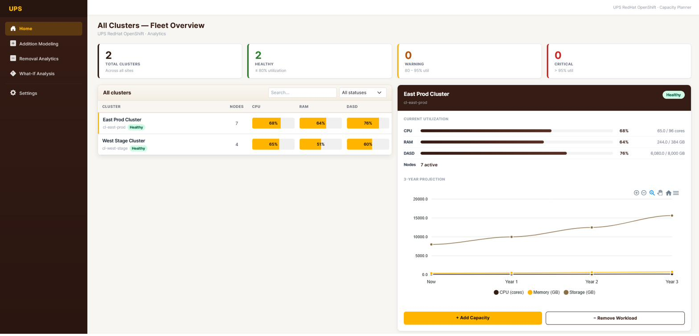
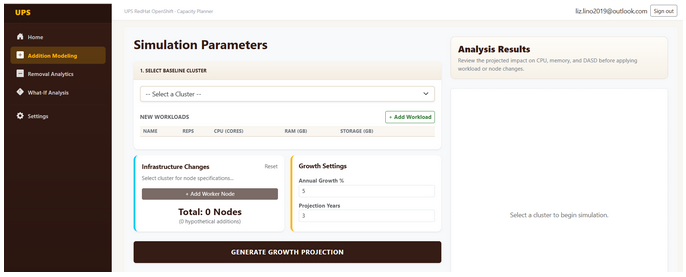
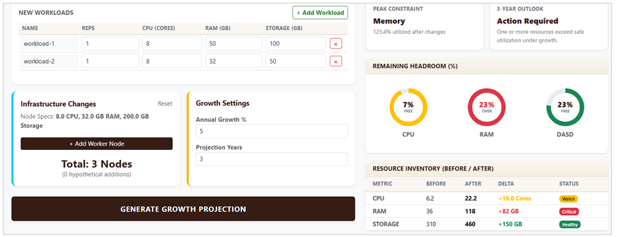
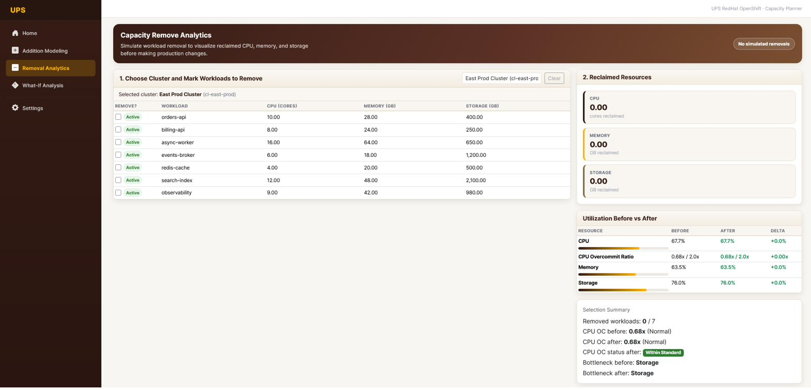
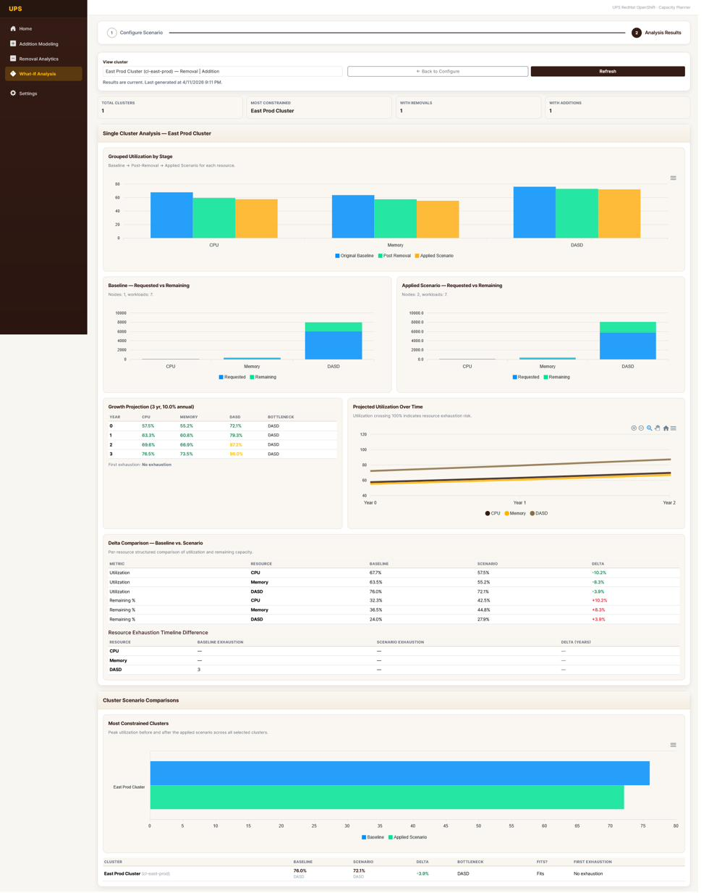

Designing and building a production analytics platform that lets infrastructure engineers model capacity across 1,100+ UPS sites — so they can make confident decisions before costs spiral.
Context
UPS infrastructure teams manage server clusters across more than 1,100 facilities worldwide. Capacity decisions — when to add resources, when to remove them, what happens if demand spikes — were being made manually, with spreadsheets and tribal knowledge. The stakes are high: under-provisioning means downtime; over-provisioning wastes millions.
I joined a 5-person Agile/Scrum team as the Frontend UI/UX engineer to design and build a web-based capacity analytics platform from scratch. My teammates: Mithil (PM), Lizeth (Associate PM), Junaid (Cloud/Systems), and Abhinav (Backend).
Research
I built two personas to anchor design decisions throughout the project:
Derek — Infrastructure Engineer. Day-to-day: monitoring cluster health, responding to alerts, executing capacity changes. He needs fast answers to specific questions: "Is there enough DASD headroom in Region 4 next quarter?"
Priya — Platform Lead. Quarterly planning cycles, budget justification, executive reporting. She needs to model scenarios — "What if we move 20% of workloads to the new cluster?" — without touching a spreadsheet.
Both personas revealed the same core need: actionable clarity from complex data. The platform had to make analytical tasks that previously took hours feel like a 2-minute conversation with the data.
Design Process
I started with low-fidelity wireframes in Figma, testing navigation flow with the team. Early feedback clarified that the platform needed three distinct analytical modes — which became the three primary views in the final UI.
For the visual design, I chose a dark theme anchored in UPS's brand identity. Dark backgrounds reduce eye strain for engineers working long monitoring shifts, and high-contrast data visualizations read more clearly against dark surfaces.

The fleet overview dashboard — entry point to all capacity data across the cluster network.
Feature 1
The Addition Modeling view lets engineers specify what they want to add — CPU, Memory, or DASD — and instantly see the projected impact on cluster capacity. The interface includes configurable inputs and renders growth projections against current baseline.


Left: the input state. Right: results rendered with growth projection overlay.
One key design decision: showing the "before" and "after" states side-by-side rather than replacing the input form. This lets engineers tweak parameters without losing context — a pattern I discovered was missing from their previous tooling.
Feature 2
The flip side of addition: engineers needed to model safe decommissions. What can be removed without putting the cluster below safe thresholds? This view surfaces at-risk resources and simulates the effect of removing specific components.

Removal analytics — flagging resources that fall below safe thresholds after modeled decommission.
Feature 3
The most complex view: a multi-scenario simulation engine. Engineers can build hypothetical scenarios — "What if demand grows 30% AND we move 2 clusters offline?" — and see the projected outcome across CPU, Memory, and DASD simultaneously.

What-If Analysis — the platform's most powerful view. Multiple charts update in tandem as scenario parameters change.
This view involved the most back-and-forth between design and backend engineering. Getting the chart updates to feel real-time (not laggy) required coordinating with Abhinav on data fetch timing — a great example of UX and engineering decisions being inseparable.
Process
The project ran on a formal Agile cadence: sprint planning, daily standups, backlog grooming, and retrospectives. I managed my own tickets in Jira and participated in all ceremonies as a full team member — not an intern or observer.
Each sprint ended with a demo to stakeholders. Having real UI to show (not just wireframes) changed the quality of feedback we received — stakeholders could react to actual interactions rather than imagined ones.
Reflection
Working in a production enterprise environment taught me things I couldn't have learned in a classroom. The biggest: constraints are design inputs. Every technical limitation — the data model, the API response time, the framework capabilities — shaped what was possible to design. Learning to work within those constraints, rather than around them, made me a better designer and a better collaborator.
I also learned that "good enough" wireframes shared early are worth ten perfect ones shared late. Some of my best design decisions came from a 10-minute conversation at a whiteboard, not from polished Figma files.